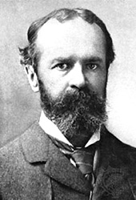
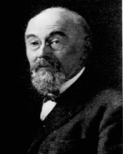
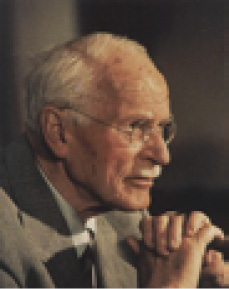

J
Jackson sarası (Jacksonian epilepsy) Kas seyirmesi, yüz hareketleri, dudak şapırdatma, sınırlı tonik kasılmalar ya da vücudun bir kesimindeki spazmlarla başlayan; daha sonra şiddeti artarak vücudun öteki organlarına sıçrayan; kimi zaman, aralıklı genel bir bilinç yitimi ile noktalanıp yinelenen kısmi nöbetlerle ortaya çıkan bir sara türü. Bkz. sara.
Jackson yasası (Jackson’s law) Hastalık yüzünden zihinsel görevlerde yitim ya da bozulma olunca, hareket düzeninde önce, son öğrenilenlerin yitirildiğini ileri süren görüş.
Jacosta karmaşası (Jacosta complex) Oedipus karmaşasında erkek çocuğunun anneye tutularak babayı kıskanması.
James-Lange kuramı (James Lange theory of emotions) Coşkuların, coşku uyandıran durumlar algılandığında bedende beliren işlevsel değişimlerin algılanmasının sonucu olduğu görüşü. Bu iki araştırmacı, bu konudaki benzer görüşlerini, birbirinden habersiz ortaya koymuşlardır. Bkz. JAMES, William.
JAMES, William (1842-1910) Yararcılığın (pragmatizmin) kurucularından; ABD’li psikolog, tıp bilgini ve düşünür. James, New York’ta doğdu; New Hampshire’da öldü. Babası bir yazar ve Tanrıbilimci olduğu için eğitimi ve gelişimi, sürekli felsefe tartışmalarının yapıldığı bir ortamda geçti. Babasının yer değiştirmesi nedeniyle sık sık okul değiştirdi. 1857’de Collége de Boulogne-sur Mére’de; 1859’da Newport’da resim çalıştı. 1867’de Almanya’da Helmholtz ve Claude Bernard ile çalıştı. Harward Üniversitesi’nde 1868’de tıp doktora derecesini aldı. Ruhsal bunalımlı bir dönemden sonra 1872’de Harvard Üniversitesi’nde öğretim üyeliğine başladı. Bu görevi, 1876’ya dek sürdürdü. O dönemde bir psikoloji laboratuvarı kurdu ve psikoloji konularını bilimsel yöntemlerle incelemeye başladı. Çok ilgi çeken makaleler yazdı. 1890’da Psikolojinin İlkeleri adlı yapıtını yayımladı. Sağlık nedeniyle öğretim üyeliğinden ayrıldı. Ondan sonra konferanslar vermeyi ve yeni yapıtlar yayımlamayı sürdürdü. William James, en çok C. S. Peirce’in felsefesinden etkilendi. 1870’lerin sonunda önermelerin anlamlarını saptamada, uygulamadaki sonuçların önemini vurguladı. Bu düşünceyi felsefesine temel yaptı ve çeşitli alanlara uyguladı. Ona göre bir nesnenin kavranmasında açıklık seçiklik, o nesnenin uygulamadaki etkilerini anlamakla sağlanıyor. Nesneyi kavramak, bu etkileri kavramaktır. Yararcı (pragmacı) kural denen bu ölçüt, James için hem anlamlılık hem de doğruluk için geçerlidir. Önermeler, uygulanabilirlikleri ve elde bulunabilirlikleri ölçüsünde anlamlıdır. Uygulamadaki sonuçları farksız olan iki önerme eşanlamlıdır. Pek çok metafizik çatışkı uygulamada bir ayrılık getirmediği için, bunlar gerçek çatışkılar değildir. Dahası metafizik önermelerin çoğu, uygulamada hiçbir sonuç doğurmadığı için anlamsızdır. James’e göre “doğru eylem, nasıl, amaca göre en yararlı davranış ise doğru düşünce ya da önerme de düşünce içinde yararlı olandır.” Buna göre, doğru önerme, onaylanması başarıya götüren önerme; yanlış önerme de düş kırıklığı ve başarısızlık getiren önermedir. Uygulamada elde edilen sonuçlar, hem doğruluk, hem anlam hem de kavramsal açıklık ve seçiklik için en önemli değerlendirme temelini oluşturuyor. İstenilir ve başarılı sonuçlar elde etmenin aracı, bilgidir. Bilginin kaynağı ise deneydir. Ancak deney, daha düşüncenin yoğurmadığı ilk aşamasındaki durumuyla anlaşılmalıdır. Duyumlardan beyne sürekli bir akış biçiminde gelen ilk girdiler, kavramlarla gruplandırılmış olan aklın ilk deney içerikleri, gerçekleri oluşturuyor. Gerçek, deney içeriğidir; görüngüler dünyasına ilk gelen ve daha zihnin kalıplarının uygulanmadığı duyumlardır. Ancak gerçeklik, düşünceden bağımsız deneydir. Başka durumlarda da insanın tüm bilincidir. Deney ortamını, birbirinden bağımsız, kopuk durumlar değil; sürekli değişim ve oluşum içindeki deney akışı belirliyor. James’e göre maddeciliğin ve idealizmin getirdiği tekçi açıklamalar, belirlenimci, yazgıcı ve katı sistemlerdir. Eğer gerçek öyle olsaydı amaca, eylem özgürlüğüne, seçime, ahlaksal sorumluluğa, yeniliğe, yaratıcılığı gerek kalmazdı. Oysa insan da onun istenci de saltık bir tözün elinde oyuncak değildir. Başarılı eylem, özgür seçime bağlıdır; onun için de evrenin bir çeşitlilikler ve çokluklar evreni olması gerekir. James’in, bilimsel psikolojinin kuruluşunda da çok önemli bir yeri bulunuyor. 1890’da yayımlanan Psikolojinin İlkeleri’nde, bu bilim dalı açısından içdeneyin (introspection’un) önemini belirtmiştir. Zihnin kendi üzerine dönerek gerçekleştirdiği işlemleri ve onların içeriklerini gözlemlemesi demek olan içdeney, bir bilim olan psikolojinin tek yöntemi olmasa bile hiç de göz ardı edilmemesi gereken önemli bir bilgi edinme yöntemidir. O, bir tıp bilgini olarak fizyolojinin önem ve değerini hiçbir zaman küçümsemeden bilincin durumlarının beden ve özellikle beyin durumlarıyla işlevsel ilişkilerini öne çıkarmıştır. Çünkü bedensel bir değişiklikle bir arada ortaya çıkmayan hiçbir zihinsel değişiklik söz konusu değildir. Fizyolojik deneylerle öğrenilenler, içdeneyden edinilen bilgilerle tamamlanıyor. Bilinç, bir zihinsel töz anlamında bağımsız bir töz değildir. Bilincin, ancak işlevsel bir birlik olarak varlığından söz edilebilir. Bu nedenle tinselci açıklama da duyumcu ve çağrışımcı zihin kuramları da doğru değildir. Zihin, sürekli değişimin birliğidir. Bilinç akışı (stream of consciousness), zihni en iyi açıklayan ve deney akışından başka bir şey olmayan gerçeklik düşüncesiyle de tutarlı olan bir kavramdır. İstenç kavramını da geçmişteki gizemli niteliklerinden arındırmak gerekiyor. İstenç, bilinç akışından yalıtılmış, kendi başına bir olgu değil; bilincin, bir genel niteliğidir. Bütün düşüncelerde (idelerde), karşıt düşüncelerce önlenmedikçe, bir eylem başlatma eğilimi vardır. James, buna ideomotor adını veriyor. İstenç, zihnin, başka düşünceleri karıştırmadan, bir tek düşünce üzerinde yoğunlaşma yetisidir. Bu yoğunlaşma gerçekleştirildiğinde eylem kendiliğinden oluşuyor. İstenç özgürdür. Tanrı varsayımı, yararcı ilkeler açısından doğrudur. Çünkü insanlar için bir doyum sağlıyor. İnsanın duygularını doyurduğu için, bir yaradanın varlığı onaylanmalıdır. Bu yaklaşımla Tanrı, evrenin bir parçası; insanlara yardımcı olan bir güç; insanla benzerlikleri olan bilinçli ve ahlaklı bir üstün kişiliktir. James’in içdeneye ağırlık veren görüşü, psikolojide bir okul olmuştur. İçdeneye karşı olan davranışçılık bile James’in “her zihinsel değişim için bir fizyolojik değişiklik” ilkesinden esinlenmiştir. James’in yaklaşımı, Dewey’i de etkilemiştir. Başlıca yapıtları: The Principles Psychology, 1890 (Psikolojinin İlkeleri); The Will to Believe, 1897 (İnanç İstenci); Human Immortality, 1898 (İnsanın Ölümsüzlüğü); Tolks to Teachers, 1899 (Öğretmenlere Konuşmalar); Pragmatism, 1907 (Pragmacılık); The Meaning of Truth, 1909 (Doğruluğun Anlamı); A Pluralistic Universe, 1909 (Çoklu Bir Evren); Essays in Radical Empiricism, (ö.s.), 1912 (Radikal Deneycilik Üzerine Denemeler).

JANET, Pierre (1859-1947) Çağdaş nevroz kuramının öncülerinden Fransız psikolog, nöroloji ve psikoterapi uzmanı. Janet, Paris’te doğdu; aynı kentte öldü. Paris Üniversitesi’nde felsefe ve tıp okudu. 1882-1889 arasında lise felsefe öğretmenliği yaptı. Hipnoz üzerindeki çalışmalarıyla ünlü nöroloji bilgini J. M. Charcot’nun ilgisini çekti. Onun çağrısı üzerine 1889’da dönemin en büyük ruh sağlığı kuruluşu olan Salpétriére Hastanesi’nin patolojik psikoloji labvoratuvarında yönetici oldu. 1898’de Sorbon Üniversitesi’nde deneysel psikoloji dersleri vermeye başladı. 1902’de, hocası T. Ribot, Clléege de France’taki kürsüsünü ona bıraktı. 1904’te çalışma arkadaşı G. Dumas ile birlikte Journal de Psychologie normale et pathologique adlı dergiyi yayımlamaya başladı. 1906’da ABD’deki Harvard Üniversitesi’ne gitti. Oradaki derslerini Histerinin Temel Belirtileri adlı kitabında topladı. Janet, döneminde etkili olan psikolojiyi fizyoloji ve felsefeden kesin olarak ayırma çabaları içinde yer aldı. Çaşılmalarını özellikle kişilik sorunu ve patolojik özellikler üzerinde yoğunlaştırdı. Psikolojiye ruhsal dinamizm ve bütünleyici işlevler kavramlarını kazandırdı. Nevrozların kavramlaştırılmasına önemli katkı yaptı. Daha sonra Freud’un kavramlaştıracağı bilinçdışı alanını ortaya koydu. Histeriye ilişkin görüşlerinden ve hipnoz yardımıyla uyguladığı bir tür psikanalizden Freud çok etkilendi. Takınaklar, tikler, nedensiz kaygılar geliştirmek demek olan psikasteniyi; bunun temel belirtileri olup kaygı, takınaklı düşünceler ile ortaya çıkan obsesyonu; kendini tutamama, bir davranışı yapmadan edememe ile ortaya çıkan kompülsiyonu ve fobiyi (bu üçlü nevrozu) ilk kez Janet tanımladı.Kürsüye çıktığı günden 1936’da emekli olana dek verdiği derslerle büyük ilgi toplayan Janet, Fransız psikoloji okulunun kavramsal temellerini oluşturan kişi oldu. Başlıca yapıtları: L’automatisme psychologique, 1889 (Psikolojik Otomatizm); L’état mental des hystériques, 1893 (Histeriklerin Zihinsel Durumu); Névroses et idées-fixes, 1902 (Nevrozlar ve sabit fikirler); Les obsessions et la psychasthénie, 1903 (Obsesyonlar ve Psikasteni); The Major Symptoms of Hystéria, 1906 (Histerinin Temel Belirtileri); Médications psychologiques, 1919 (Psikolojik Tedaviler); L’évolution de la mémoire et la Notion de temps, 1928 (Belleğin Evrimi ve Zaman Kavramı); L’intelligence avant le language, 1936 (Dilden Önce Zekâ).

Pierre JANET
Jenosit Bkz. soykırım.
jinekolog (gynécologue) kadın hastalıkları uzmanı.
jinekoloji Bkz kadın hastalıkları bilimi.
Jost yasası (Jost’s law) Güçleri eşit; ancak yaşları değişik olan iki çağrışımdan eskisinin gücünün, yinelenme sonucu yenisinden daha çok arttığını ve belirli bir süre içinde eskinin daha güç unutulduğunu öne süren görüş.
Jukes ailesi (Jukes’ family) Üyelerinin büyük bir bölümünün, değişik kuşaklarda geri zekâlı, uyumsuz oldukları saptanan aileye verilen takma ad.
JUNG, Carl Gustav (1875-1961) Psikoloji uzmanı, analitik psikoloji (çözümsel ruhbilim) okulunun kurucusu. Jung, İsviçre’nin kuzeyinde, ünlü Rhine çağlayanının yakınındaki küçük bir kasaba olan Kesswil’de doğdu. Küssnacht’te öldü. Altı yaşında Latince öğrenmeye başladı. Bu, özellikle antik edebiyata ilişkin ilgisinin başlangıcı oldu. Çağcıl Batı Avrupa dillerinin birçoğunu, Sanskritçe ve Arapçayı ve başka kimi dilleri ileri düzeyde öğrenip okudu. Kendi anlatımıyla, yalnız, yalıtılmış ve mutsuz bir çocukluk geçirdi. Babası, inancını yitirdiği açıkça belli olan huysuz ve alıngan bir rahip; annesi ise duygusal bozuklukları olan, davranışları dengesiz bir kadındı. Bir an, mutlu bir ev kadınıyken, birdenbire anlamsız şeyler mırıldanan bir şeytan görünümüne dönüşüyordu. Anne babasının evlilikleri oldukça mutsuz olan Jung, erken yaşlarda özelde anne babasına; genelde de dış dünyaya güvenmemesi ve onlara açılmaması gerektiğini öğrendi. Bunun sonucunda rüyalarından, imge ve tasarımlarından oluşan iç dünyasına (bilinçdışı dünyasına) yöneldi. Ona çocukluğunda ve yaşamının geri kalan bölümünde sağduyunun bilinçli dünyası değil; rüyaları ve bilinçdışı yol gösterdi. Jung, bilinçdışının, rüyaları aracılığı ile ona söylediklerinin temelinde kararlar alarak yaşamının çok önemli zamanlarında sorunlarını çözdü. Üniversitede hangi alanı seçeceği konusunda düşünürken, rüyasında kendini tarihöncesi hayvanların kemiklerini toprağı kazarak çıkaran biri olarak görmüştü. Bu rüyasını, bilim ve doğa çalışması yapması gerektiği biçiminde yorumlamıştı. Bu ve kendini üç yaşındayken büyük bir yer altı mağarasında gördüğü rüyası, onun, gelecekteki çalışma yönünü belirledi: Zihnin yüzeyde görünenlerin altında kalan bilinçdışı güçler. Jung, klasik filoloji ve arkeoloj öğrenmek için girdiği Basel Üniversitesi’nde gerçekte tıbba ilgisi olduğunu anlayarak, tıp öğrenimi gördü. 1900’de Basel Üniversitesi’ni bitirdi. 2 yıl sonra Zürih Üniversitesi’nden tıp doktoru unvanını aldı. Ünlü Eugen Bleuler’in yönetinimdeki Berghölzli Akıl Hastanesi’nde psikiyatri uzmanı olarak çalışmaya başladı. Fransa’da Janet ve Charcot’nun da bir süre öğrencisi oldu. 1913’te hastanesindeki görevinden ayrılarak tüm zamanını özel hasta bakımına, araştırma ve eğitime ayırdı. Freud’a ilk mektubunu yazdı. Bir yıl sonra da Viyana’ya gidip onunla tanıştı. Düşünce benzerliğinin etkisiyle iki bilim adamı arasında yakın bir dostluk kuruldu. 1909’da birlikte çağrıldıkları ABD’deki Cılark Üniversitesi’nde bir dizi konferans verdiler. Viyana Psikanaliz Enstitüsü, 1910’da Viyana Uluslararası Psikanaliz Derneği’ne dönüştüğünde Jung, derneğin başkanlığına getirildi. Ne var ki iki dost arasındaki bu yakın ilişki, iki yıl sonra soğumaya başladı; 1913’te de tümüyle koptu. 1914’te Uluslararası Psikanaliz Derneği’nin başkanlığından tümüyle ayrılan Jung’la Freud, bir daha karşılaşmadılar. O günden sonra Jung’un ileri sürdüğü görüşler, “analitik psikoloji” adıyla yayılmaya başladı. Freud’la Jung arasındaki ilişkinin kopmasına birçok karmaşık nedenin yol açtığı söylenebilirse de bunların en belirgin olanı, Jung’un Freud kuramındaki ruha (psyche’ye) ilişkin her şeyi cinselliğe bağlamasını benimsememesidir. Jung, insanın ruhsal-cinsel dürtülerden çok, manevi ve ahlaksal değerlerle güdülendiğini savundu. Kendine özgü bir kişilik kuramı olarak geliştirdiği analitik psikolojide psikolojik yapıyı benlik, kişisel bilinçdışı ve ortak bilinçdışı olarak üç bölümde inceledi; persona ve gölge ile birlikte bu üç yapının kişiliği oluşturan sistemler olduğunu vurguladı. Psikolojik işleyişte de dinamik bir görüş belirleyen Jung, bu işleyişin karşıtların birliği, eşdeğerlilik ve entropi olarak üç ilkeye göre gerçekleştirildiğini ileri sürdü. Jung, kuramındaki içedönüklük-dışadönüklük, anima-animus, erkeklik-dişilik gibi temel kavramlarını hep bu karşıtlık içinde ele aldı. Örneğin, dışarıdan içedönük olan birinin, içeriden dışadönük olduğunu; dışarıdan kadın olan birinin de içeriden erkek olduğunu savundu. Buna bağlı olarak, ruhsal hastalığı da bu karşıtların dengede olmaması; tedaviyi bu dengesizliği giderme süreci olarak gördü. Çok üretken; ama kolay okunamayan yapıtları, 20’ye yakın ciltten oluşan toplu yapıtlar biçiminde yayımlandı. Jung, 1933-1941 yılları arasında Zürih’teki Federal Politeknik Üniversite’de ders verdi. Emekliye ayrıldıktan sonra, yetiştirdiği öğrencileri, Zürih’te onun adını taşıyan bir okul açtılar. 1944’te Basel Üniversitesi’nde Jung için özel bir tıpsal psikoloji kürsüsü kuruldu. Ancak, sağlığının bozulması nedeniyle bu kürsüde bir yıl ders verebildi. Jung, 60 yıllık çalışma yaşamı süresince pek çok yapıt verdi. Kişiliğin derinlerindeki süreçleri inceleyen bir ruh hekimi ve duyarlı bir psikolog olarak ün yaptı. Kuramı yalnızca tıpta ve psikolojide saygıyla karşılanmakla kalmadı; her alanda ilgi gördü. Harvard ve Oxfort Üniversitesi’nce onur madalyalarıyla ödüllendirilen Jung, daha çok, ABD’de etkin oldu. Jung’un psikoloji ve psikiyatriyi oldukça etkileyen çalışmaları, bunlardan daha çok da din, tarih, sanat ve yazın gibi alanlar üzerinde etkili oldu. Pek çok tarihçi, yazar, ilahiyatçı, Jung’un kendilerine esin kaynağı olduğunu bildirdi. Bunun yanı sıra önemli bir nokta da bilimsel psikolojinin analitik psikolojiyi görmezden gelmesi oldu. Jung’un geleneksel bilim yöntemlerini küçümsemesinden başka, zor anlaşılan yazış biçiminin de etkisiyle deneysel psikologların, yazılarındaki tüm mistik ve dinsel öğelere karşın, Freud’un yazılarından bile az ilgilerini çekti. Böyle olmakla birlikte Jung’un psikolojik tiplere ilişkin görüşleri, anılmaya değer ölçüde araştırma yapılmasına yol açtı. 1920’lerde yapılandırılan ve bir kişilik testi olan Myers - Briggs göstergesi, hem yapılan psikolojik tiplerle ilgili araştırmalarda temel araç oldu hem de özellikle çalışan seçimi ve danışmanlık gibi alanlarda uygulama amacıyla kullanıldı. Jung’un içedönüklük ve dışadönüklük ile ilgili çalışması bir de İngiliz psikolog Hans Eysenck’e esin kaynağı oldu ve bu kişinin, içedönüklük ve dışadönüklüğü ölçen Maudsley kişilik envanteri adlı testi geliştirmesini sağladı. Bu çalışma, Jung’un düşüncelerinin en azından bir bölümünün deneysel testlere uygun olduğunu gözler önüne sermiş oldu. Ancak, Freud’un çalışmaları gibi Jung’un kuramının karmaşalar (kompleksler), ortak bilinçdışı, ilkörnekler (arketipler) gibi konuları içeren büyük bölümü de bilimsel geçerliği sağlama girişimlerine karşı koydu. Jung’un psikolojiye önemli bir katkısı da standart bir yansıtıcı teknik durumuna gelen sözcük çağrışım testinin, Rorschach mürekkep lekesi testi’nin geliştirilmesinde güdüleyici olmasıdır. Bir başkası, Maslow’un kendini gerçekleştirme kavramıyla ortaya koyduğu çalışmalarının ve öbür çalışmalarının kaynağını oluşturan yaklaşımları daha önce görmesidir. Yine Maslow ve Erikson’un benimseyip psikolojiye geniş ölçüde uyarladıkları orta yaşın, kişilik değişimi için çok önemli olduğu görüşü de Jung’a aittir. Başlıca yapıtları: Dementia Praecox Psikolojisi Üzerine (1907), Libidonun Değişimleri ve Simgeleri (1911-1912), Psikolojik Tipler (1921), Egoyla Bilinçdışı Arasındaki İlişkiler (1928), Altın Çiçeğin Gizemi (1929), Psikoloji ve Din (1940), Psikoloji ve Simya (1944), Ruhun Simgeleri (1948), Aion, Simgelerin Tarihine İlişkin Araştırmalar (1951), Geçmiş ve Gelecek (1957), Çağdaş Mitos: Gökyüzünde Görülen Şeyler (1958). Bkz. benlik; büyücü bacı; büyükler imgesi; etkin düş kurma; güç karmaşası; ilkel imge; indirgemecilik; paleopsikoloji; psikanaliz; Rorschach Mürekkep Lekesi Testi; ruh imgesi; simgeleştirme; UFOlar.

Jungcu analiz (Jungian analysis) Uyum güçlüğü çekenleri ya da ruh hastalığına yakalananların tedavisi için ruhsal olayları Jung’un yöntemiyle çözümleme; Jungçu çözümleme. Bkz. analitik psikoloji; JUNG, Carl Gustav.
Jung kuramı Bkz. analitik psikoloji.
Jung ruhbilimi Bkz. analitik psikoloji.
Jung’un ruhsal yapı sınıflaması (Jung’s taxonomy of psychological teaching) Jung’un ortaya koyduğu ruhsal tipler. Jung, insanları genelde içe dönük ve dışa dönük diye iki tipe ayırıyor. İçedönüklük ve dışadönüklük (introversion-extroversion), Jung’a göre iki temel kişilik boyutudur. Jung, içedönük kişileri, dış dünyaya kapalı, utangaç, çekingen ve iç yaşantılarıyla (düş ve düşlemleriyle) fazlaca ilgili kişiler olarak tanımlıyor. Dışadönük kişileri ise, atılgan, toplumsal yanı gelişmiş, sorunlarını başkalarıyla paylaşabilen kişiler olarak belirliyor. Bunların yanı sıra bir de duygusal, düşünsel, duyusal ve sezgisel olarak dört işlevsel tipten söz ediyor. Bunlardan ilk ikisini ussal tip; öbür ikisini de usdışı tip olarak adlandırıyor. Ussal tipler, davranışlarını daha çok aklına dayandırıyor, duygularını denetliyor. Usdışı tipler ise davranışlarını öncelikle duyumlarına ve sezgilerine dayandırıyor. Bunlar, özellikleri bakımından birbirine karşıt iki tip özelliği taşıyor. bkz. analitik psikoloji; işlevsel tipler; JUNG, Carl Gustav; tipoloji.